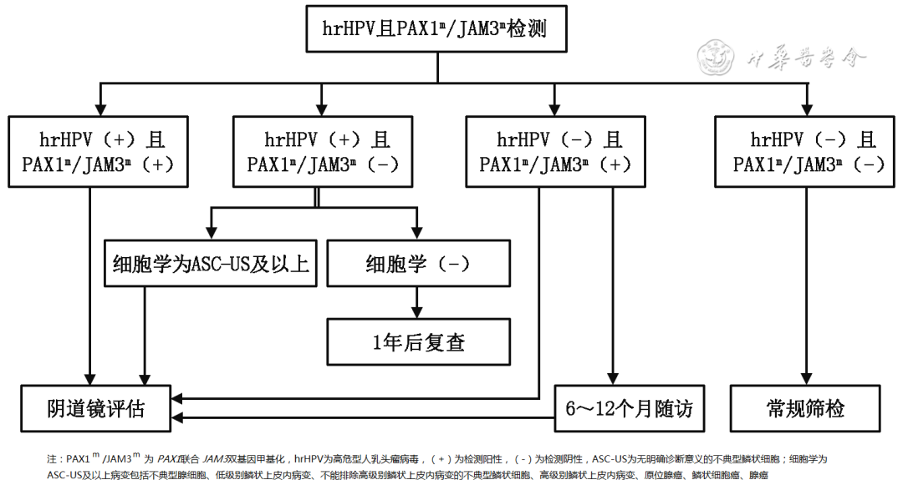
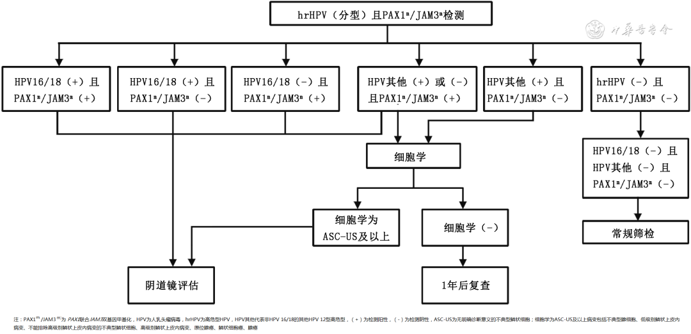
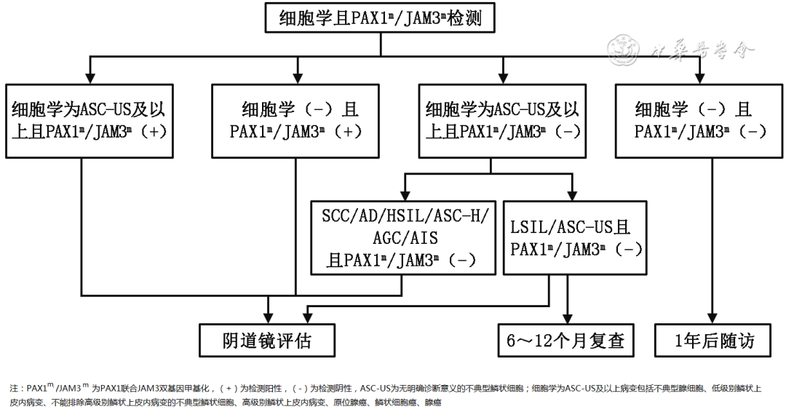

1Background & Significance
- Burden: 150,700 new cervical cancer cases in China 2022 (rank #5 female cancers).
- Gap: screening coverage 36.8% (2018–19) — far from 70% target 2030.
- Role: WHO/IARC recognize methylation as an emerging screening method.
2Lab Workflow & QC Essentials
Sample
cervical exfoliated cells
MSP/qPCR
bisulfite + PCR
ΔCt 8.4/8.8
PAX1/JAM3 cut-offs
- Lab: licensed gene-amplification lab; validate manufacturer performance claims.
- Sample: standardized collection & storage; 2–3 ml cell suspension for DNA.
- Conversion: bisulfite immediately; DNA ≤1 week at −20°C; Bis-DNA ≤3 days.
- QC: negative/weak-positive controls per run; internal & reference channels.
- Reagent: NMPA-approved kits; performance verification before use.
2–3 ml
cell suspension
200–1000 ng
DNA input
−20°C
storage
DNA
extraction check
Bis-DNA
immediate PCR
vortex
sample prep
- Extraction: column vs magnetic bead; check purity/yield/integrity.
- Efficiency: assess kit extraction efficiency before standardization.
- Performance items: method agreement · LOD · anti-interference · cross-reactivity.
- Re-test: establish repeat-testing procedure & data analysis flow.
- QC targets: set target values & control limits with current standard procedure.
- Controls: kit/third-party/self-made validated controls each run.
Consensus 2–5: establish procedures, performance verification, sampling rules, QC system (all strong); Oxford CEBM evidence grading.
3Consensus Statements
1
Novel non-invasive test: methylation is feasible for cervical cancer detection.
L2 · Strong
2
Lab standards: licensed lab, procedures & performance verification.
L1 · Strong
3
Sampling rules: standardized collection & preservation.
L2 · Strong
4
Approved reagents: NMPA-approved kits + performance validation + retesting QC.
L2 · Strong
5
QC system: ensure result accuracy.
L2 · Strong
6
Qualitative reporting: positive/negative with standardized report format.
L2 · Strong
7
Adjunct diagnosis: combine with HPV/cytology for management decisions.
L2 · Rec
8
Discrepancy handling: follow guidelines when methylation vs biopsy mismatch.
L2 · Rec
Report: qualitative ± per Clinical Gene Testing Report consensus — integrates into risk-based management.
4Clinical Management Flowcharts

Fig 1 · hrHPV untyped (4 branches)
① HPV+ & M+ → colposcopy.
② HPV+ & M− → genotype; cytology if unavailable (ASC-US+ → colposcopy; NILM → 1yr).
③ HPV− & M+ → colposcopy or 6–12mo re-test.
④ both− → routine.
② HPV+ & M− → genotype; cytology if unavailable (ASC-US+ → colposcopy; NILM → 1yr).
③ HPV− & M+ → colposcopy or 6–12mo re-test.
④ both− → routine.

Fig 2 · hrHPV typed (16/18 & others)
① 16/18+ & M+ → colposcopy.
② 16/18+ & M− → colposcopy (high risk).
③ 16/18− & M+ → colposcopy; other types per rules; other− → routine.
② 16/18+ & M− → colposcopy (high risk).
③ 16/18− & M+ → colposcopy; other types per rules; other− → routine.

Fig 3 · Methylation + cytology (ASC-US+ / NILM)
ASC-US+ & M+ → colposcopy · M− & (SCC/adeno/HSIL/ASC-H/AGC/AIS) → colposcopy · M− & (LSIL/ASC-US) → 6–12mo re-test or colposcopy · NILM & M+ → colposcopy · NILM & M− → 1yr re-test or HPV.
Clinical Significance
- Standardized PAX1/JAM3 methylation: 8 consensus statements define lab workflow, QC, reporting and clinical use for cervical cancer triage.
- Practice-ready integration: combine with HPV/cytology per management scenarios — improves screening & diagnosis accuracy.